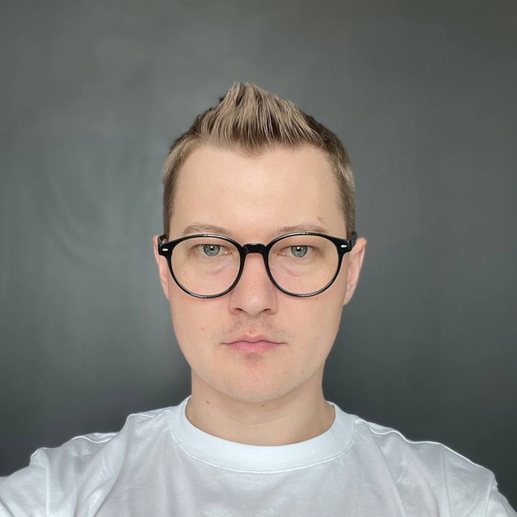

Проектирую продукты, системы и команды
Senior / Lead продуктовый дизайнер, 10+ лет в Web, iOS и Android. Сам веду ключевые сценарии и дизайн-систему и помогаю команде расти.
Обсудить задачуРаботы
Продукты, где я отвечал за дизайн целиком: от исследований до дизайн-системы.


Как я работаю
Четыре шага, которые повторяются в каждом продукте.
- 01
Понимаю задачу
Интервью, CJM и JTBD, разговоры с бизнесом. Договариваемся, что считать успехом.
- 02
Проектирую сценарии
Архитектура, прототипы, проверка с пользователями и командой.
- 03
Собираю систему
Интерфейс на токенах и компонентах: темы, состояния, документация.
- 04
Довожу до релиза
DoR/DoD, дизайн-ревью, сопровождение разработки и доработки по метрикам.
ИИ в работе
ИИ забирает рутину, решения остаются за мной.
- AI Kit
UI-кит для генерации
Кит со своим Storybook, чтобы сгенерированные интерфейсы были в системе.
- 3D
Иконки для Comfort
Сгенерировал с ИИ и довёл до единого стиля.
- Сайт
Собран в паре с Claude
Концепция и решения мои, код и проверки вместе.

Играющий тренер: делаю сам и усиливаю команду
Последние два года строил UX/UI-направление в Sminex: собрал команду, выстроил процессы и дизайн-систему.
При этом остаюсь в макетах: сам вёл весь дизайн Sminex Comfort и «Портала строителя» и собирал дизайн-систему руками.
Мастерская. Прототипы, анимации и эксперименты с ИИ, отдельно от кейсов.
Заглянуть →Есть задача для играющего тренера?
Написать